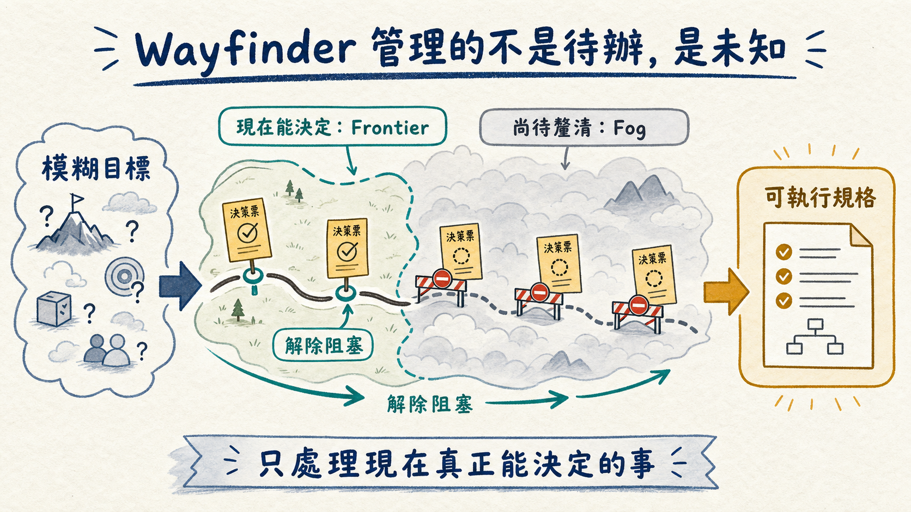
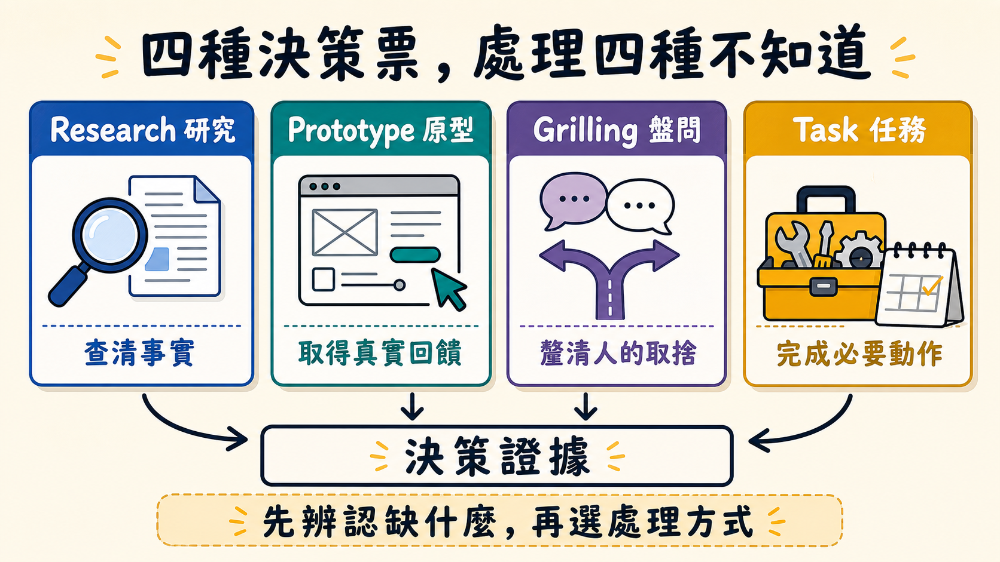

面對一個大到不可能塞進單次 AI 對話的專案，多數人的第一反應是先把它切成小任務。這聽起來合理，卻藏著一個順序上的陷阱：如果連路線都還沒看清楚，太早拆工只會得到一批描述精確、方向未必正確的工作項目。Matt Pocock 在這支影片介紹的 Wayfinder，真正想解決的並不是「如何產生更多 tickets」，而是更前面的一層問題——當研究、原型與關鍵決策彼此相依時，如何讓 AI 知道哪些事現在能做，哪些事必須等迷霧散去。
單次對話的限制，正在反過來縮小我們的企圖
Matt 原本常用 `/grill-me` 或 `/grill-with-docs`，讓 agent 透過盤問釐清需求。這仍是重要的基本動作，但它綁在一個 session 裡：對話一長，就得同時顧慮 context window、token 消耗，以及模型在長上下文後段逐漸失去判斷力的「smart zone」。於是人會在開始前先把野心削小一點，只挑一塊看起來能在單次對話內完成的工作。
麻煩在於，大型工作不是把小工作排成一列而已。規劃到一半，常會遇到暫時答不出來的問題：某項技術到底能不能用，需要先研究；某個互動到底順不順，需要先做原型；兩種方案如何取捨，需要再談一次；甚至得先找人、做現場勘查或完成外部設定。這些未知不是規劃失敗的雜訊，而是規劃本身的主要內容。
所以 Wayfinder 的出發點很反直覺：不要求一開始就知道完整路線，只要求先說清楚目的地。它接受「我知道想去哪裡，但不知道怎麼走」這個狀態，然後把清除未知的過程本身變成可追蹤的工作。
一張地圖，不是一份提早寫完的待辦清單

Wayfinder 把大型工作表示成一張 map。地圖上有兩個重要區域：frontier 是根據目前資訊，現在已經能處理的決策；fog 則是尚未具備條件、還不能可靠決定的部分。每完成一張決策票，新的資訊可能解除其他票的阻塞，也可能暴露出原先沒看見的問題，frontier 因而向前移動。
這和一般待辦清單的差別很大。待辦清單假設拆解工作的人已經理解整條路線，只差照順序執行；Wayfinder 則承認路線會在行進中才逐步浮現。它追蹤的不只是「做完幾項」，還包括「哪些判斷已有證據」「哪些判斷仍被前置問題擋住」。
Matt 展示的其中一張 map 有 17 張票，當時完成了 14 張，核心 skill 卻仍未真正動工。這不是進度失控，而是前 14 張票正在處理會影響核心設計的研究、原型與討論。核心完成後，還要回頭重新檢查其他項目。若只看完成比例，14／17 像是接近終點；若看決策依賴，它可能只是剛取得足以開始實作的條件。
四種決策票，代表四種不同的「不知道」

Wayfinder 的票不是清一色的實作工作，而分成四類：
- Research：缺的是外部資訊或程式碼庫裡的事實，交由 agent 調查後帶回結果。
- Prototype：缺的是高保真回饋，必須先做出可操作的版本，才能判斷設計是否合理。
- Grilling：缺的是人的意圖或取捨，需要透過對話把隱含決策說清楚。
- Task：缺的是某個實際動作，可能是 agent 能執行但必須排在其他工作之後，也可能需要人到現實世界完成。
這四類票的價值，不只在分類方便，而是避免用錯方法。需要操作回饋的問題，繼續開會不會更接近答案；需要查證的問題，不該用個人偏好拍板；需要負責人選擇的問題，也不能假裝 agent 多跑幾次就會自然產生正確答案。
其中 prototype 更是 Wayfinder 不致退化成瀑布式規劃的關鍵。大量前期文字規劃只是低保真推測；原型把可操作的結果提早帶回規劃流程，允許地圖根據真實回饋改道。規劃因此不是先凍結、後執行，而是一邊取得證據、一邊修正路線。
真正能跨 session 的，是外部化的決策紀錄
Wayfinder 把 map 與每張決策票寫進 issue tracker。Matt 使用 GitHub Issues，但這套 skill 不綁 GitHub；經過設定後也能接 Linear、Jira 或其他工單系統。每張票在獨立 session 處理，完成後把結論寫回子票，並在父層 map 留下摘要。研究結果、做過的原型、完成的任務與決策依賴，都不必靠某個聊天視窗記住。
這揭露了跨 session 協作的核心：不是替模型打造一個永不遺忘的超長對話，而是把專案狀態放到對話之外。每個新 session 只需要讀取當下那張票、父層地圖和必要來源，就能在相對乾淨的上下文裡工作。agent 的記憶可以重設，專案的記憶不能跟著消失。
Matt 的操作方式也很單純。第一次呼叫 Wayfinder，是建立 map、確認目的地並找出初始 frontier；之後每次開新 session，就把特定 ticket URL 交給 Wayfinder。影片裡的 command palette 案例，一開始建立七張決策票，當下只有三張具備處理條件。這個數字很能說明問題：建立了七張票，不代表七張都應立即開工。
從決策票到實作票，中間不能省略那次轉譯
當迷霧清除、map 抵達目的地後，它仍不是直接拿來實作的規格。Wayfinder map 保留大量探索路徑、討論與依賴，資訊密度可能高到不適合作為施工文件。Matt 的做法是先對 map 執行 `/to-spec`，把已確定的決策整理成 specification，再用 `/to-tickets` 切成實作票，接著逐票實作，最後進行 code review。
整條鏈可以寫成：
模糊目標 → Wayfinder 決策地圖 → 規格 → 實作票 → 實作 → 程式碼審查
這裡要區分兩種外表相似、用途完全不同的 tickets。Wayfinder 階段的是決策票，目的是取得足以設計系統的資訊；`/to-tickets` 產生的是實作票，目的是把已經決定的設計做出來。混淆兩者，就會在問題尚未釐清時急著寫程式，或在設計已經清楚後繼續無止盡地研究。
Wayfinder 還修補了單次盤問工作流的一個弱點。一般規格只是會議內容的摘要，一旦摘要漏掉理由，後續 agent 只能把二手文字當成唯一事實。Wayfinder 產生的規格可以連回原始決策票；當實作者不理解某項結論時，能回到當時的研究、原型或討論查看第一手脈絡。不是把所有歷史塞進 prompt，而是在需要時找得到來源。
規格是這趟旅程的目的地，不是永久統治程式碼的憲法
這套流程看起來很像規格驅動開發，Matt 卻刻意劃了一條界線：在他的做法裡，spec 是跨多個實作 session 共用的「目的地文件」。當功能已經落進程式碼，他會關閉保存 spec 的 issue，通常不再把規格留在 repository 裡持續維護。規格服務的是這一段旅程，而不是永遠與程式碼競爭誰才是真相。
這個選擇有實際代價。非永久規格減少文件腐化與雙重維護，但也表示重要的長期架構知識不能只活在一次性 spec 裡；真正需要長期保存的原則，仍得進入程式碼、測試、ADR 或其他穩定文件。Wayfinder 解決的是一段大型變更如何跨 session 抵達終點，不等於自動完成整個組織的知識治理。
同樣地，issue tracker 也不會因為接上 AI 就自動變成可靠的專案記憶。如果票的結論含糊、阻塞關係沒有更新、原型沒有連回決策，下一個 session 讀到的仍然是壞資料。Wayfinder 把規劃狀態外部化，換來跨 session 的延續性；代價是團隊必須把工單紀律當成系統的一部分，而不是行政雜務。
什麼時候值得打開 Wayfinder？
Matt 給的判準很務實：如果工作能在一次 session 內規劃完成，而且大致知道如何抵達目的地，就不要使用 Wayfinder。直接盤問、寫規格或動手做，流程越短越好。Wayfinder 適合的是「目的地可描述，但路線仍有大片迷霧」的工作；尤其當研究、原型、人的決策與外部任務互相阻塞時，它才開始顯出價值。
這也解釋了 Matt 為什麼不只拿它寫程式。他用 Wayfinder 規劃課程，也用來處理花園辦公室工程：安排場地勘查、研究廠商、確認該聯絡誰。這些工作的共同點不是都與軟體有關，而是都無法在起點列出一份可信的完整待辦清單。
Wayfinder 最值得帶走的觀念，甚至不一定是這個 skill 本身。AI agent 很擅長執行已描述清楚的工作，但大型專案最昂貴的部分，往往是找出「現在還不能描述清楚什麼」。當我們不再逼一個 session 假裝知道整條路，而是讓研究、原型、討論與任務逐步推進 frontier，大型規劃才不必受限於模型一次能記住多少內容。
先把目的地說清楚，然後只處理眼前真正能決定的事。剩下的，讓地圖等證據出現後再展開。